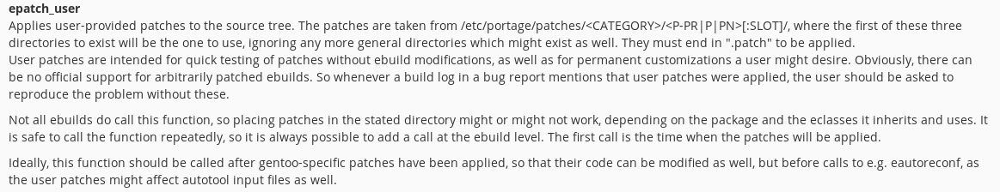

今天剛好看到 Linux 5.3.0 Release 的資訊，因此就順手將我的 Gentoo Linux 給升級。
不過在進行重編譯所有 kernel module 的動作，也就是以下指令的時候出錯
gentoo # emerge @module-rebuild
因此讓我們來紀錄一下如何在 Gentoo Linux 下針對特定套件打入自己需要的 patch
epatch_user
Gentoo Linux 提供了 epatch/eapply 機制，可以讓使用者在官方尚未收錄對應的 patch 的時候，讓使用者透過修改 ebuild 加上需要的 patch 來避免編譯錯誤或是增加期望的功能，但是缺點就是我們需要自行留存一份對應的 ebuild 才行。
後來，在 EAPI 5 的時候，開始有了 epatch_user 這項機制，可以透過在 /etc/portage/patches 加入需要的 patch 來修正某些套件的編譯問題，可惜這項功能並未全部的 ebuild 都擁有。

但是自從 EAPI 6 以後，這項機制就已經是預設的功能，我們可以直接修改 /etc/patches 內的 patch，來針對編譯出錯的套件打上 patch，這邊將以我遇到的狀況來解釋如何使用這項機制。
virtualbox-modules
升級到 gentoo-source-5.3.0 後，在重新編譯其他的 kernel modules 的時候，我遇到的就是 app-emulation/virtualbox-modules-6.0.12 的編譯錯誤啦，錯誤訊息如下:
/var/tmp/portage/app-emulation/virtualbox-modules-6.0.12/work/vboxdrv/r0drv/linux/mp-r0drv-linux.c: In function 'VBoxHost_RTMpOnAll':
/var/tmp/portage/app-emulation/virtualbox-modules-6.0.12/work/vboxdrv/r0drv/linux/mp-r0drv-linux.c:287:18: error: void value not ignored as it ought to be
287 | int rc = smp_call_function(rtmpLinuxAllWrapper, &Args, 0 /* wait */);
| ^~~~~~~~~~~~~~~~~
/var/tmp/portage/app-emulation/virtualbox-modules-6.0.12/work/vboxdrv/r0drv/linux/mp-r0drv-linux.c: In function 'VBoxHost_RTMpOnOthers':
/var/tmp/portage/app-emulation/virtualbox-modules-6.0.12/work/vboxdrv/r0drv/linux/mp-r0drv-linux.c:341:8: error: void value not ignored as it ought to be
341 | rc = smp_call_function(rtmpLinuxWrapper, &Args, 1 /* wait */);
| ^
make[3]: *** [scripts/Makefile.build:281: /var/tmp/portage/app-emulation/virtualbox-modules-6.0.12/work/vboxdrv/r0drv/linux/mp-r0drv-linux.o] Error 1
make[3]: *** Waiting for unfinished jobs....
而我們可以在 Patch VirtualBox 6.0.10 for Linux kernel 5.3.y 這邊找到對應的 patch，或是自己照著改一份
接下來，要怎樣導入呢? 首先先確定 app-emulation/virtualbox-modules-6.0.12 是 EAPI 6 以上的版本，我們可以打開 /var/db/repos/gentoo/app-emulation/virtualbox-modules/virtualbox-modules-6.0.12.ebuild 看裡面的內容，就可以發現到其已經是 EAPI 6 以上的版本了，可以支援下一步的動作，也就是直接加上 patch 不用修改 ebuild
# Copyright 1999-2019 Gentoo Authors # Distributed under the terms of the GNU General Public License v2 # XXX: the tarball here is just the kernel modules split out of the binary # package that comes from virtualbox-bin EAPI=7 inherit linux-mod user # skip
/etc/portage/patches
我們可以參照 Gentoo Wiki 上的教學，根據你目標套件的 ${CATEGORY}/${P}-${PN} 來建立對應的資料夾放置需要的 patch，以這次我遇到需要修改 app-emulation/virtualbox-moduiules-6.0.12 為例，我需要建立以下資料夾
gentoo # mkdir -p /etc/portage/patches/app-emulation/virtualbox-modules-6.0.12
並把 fix-on-kernel-5.3.0.patch 放到這資料夾內
gentoo # cp fix-on-kernel-5.3.0.patch /etc/portage/patches/app-emulation/virtualbox-modules-6.0.12
接下來重新讓 portage 編譯 virtualbox-modules 即可，只要 ebuild 是 EAPI 6 以上，portage 就會自動從 /etc/portage/patches 找符合規則的 patch 打上。
gentoo # emerge =app-emulation/virtualbox-modules-6.0.12
這樣就可以順利編譯過啦，等到 Gentoo 的 portage 有收錄這份 patch 後，再將其移除就好
gentoo # rm -rf /etc/portage/patches/app-emulation/virtualbox-modules-6.0.12
問題查找
如果打 patch 不順利，也可以透過 ebuild 的命令手動來進行這些步驟
gentoo # cd /var/db/repos/gentoo/app-emulation/virtualbox-modules gentoo # ebuild virtualbox-modules-6.0.12.ebuild clean prepare * vbox-kernel-module-src-6.0.12.tar.xz BLAKE2B SHA512 size ;-) ... [ ok ] * checking ebuild checksums ;-) ... [ ok ] * checking auxfile checksums ;-) ... [ ok ] * checking miscfile checksums ;-) ... [ ok ] * Determining the location of the kernel source code * Found kernel source directory: * /usr/src/linux * Found sources for kernel version: * 5.3.0-gentoo * Checking for suitable kernel configuration options... [ ok ] >>> Unpacking source... >>> Unpacking vbox-kernel-module-src-6.0.12.tar.xz to /var/tmp/portage/app-emulation/virtualbox-modules-6.0.12/work >>> Source unpacked in /var/tmp/portage/app-emulation/virtualbox-modules-6.0.12/work >>> Preparing source in /var/tmp/portage/app-emulation/virtualbox-modules-6.0.12/work ... * Applying fix-on-kernel-5.3.0.patch ... [ ok ] * User patches applied. >>> Source prepared.
這樣就可以確定是否有打上 patch 囉 ~